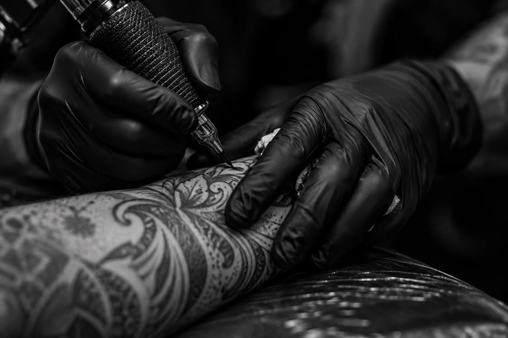

RED TATTOO / BY CRISTI NITU
ARTĂ CARE
RĂMÂNE.
Unele povești nu se spun.
Se poartă pe piele.
MAI MULT
DECÂT
CERNEALĂ.
Nu alegi doar un tatuaj.
Alegi o parte din tine.
O amintire. O convingere. Un nou început. Sau pur și simplu artă care te reprezintă. La RED TATTOO, povestea începe cu tine.
De la prima referință la desenul final, fiecare detaliu contează: locul, proporția, linia și felul în care designul se așază pe corp.
Descoperă universul RED pe Instagram, într-o filă nouăCE TE
DEFINEȘTE?
Nu există o singură formă de expresie.
Explorează câteva direcții pentru ideea ta.
01BLACK & GREY
UMBRĂ. CONTRAST. PROFUNZIME.
Detalii care prind viață din lumină și umbră. O direcție vizuală expresivă, de la portrete la compoziții cu o poveste întreagă.
Pornim de aici02FINE LINE
PUȚINE LINII. MULT SENS.
O linie delicată, un simbol personal, o compoziție aerisită. Un punct de plecare pentru ideile care se exprimă prin simplitate.
Pornim de aici03CUSTOM DESIGN
PUNCTUL DE PLECARE EȘTI TU.
Referințele tale pot deveni ceva nou. Discutăm ideea, amplasarea și dimensiunea pentru a găsi o compoziție care are sens pentru tine.
Pornim de aiciStilul și detaliile proiectului se stabilesc împreună cu artistul.

DETALIUL FACE DIFERENȚA.IMAGINE DE ATMOSFERĂFIECARE LINIE
ÎNCEPE CU
O CONVERSAȚIE.
Spune-ne ce ai în minte.
Trimite-ne ideea, câteva referințe și zona în care îți dorești tatuajul. Nu trebuie să ai toate răspunsurile. De aici începe conversația.
Dăm formă ideii tale.
Discutăm direcția, dimensiunea și felul în care desenul urmărește corpul. Un design bun se construiește din alegeri atente.
Povestea își găsește locul.
Stabilim împreună detaliile ședinței. În ziua programării, discutăm poziționarea și ultimele ajustări înainte ca ideea să ajungă pe piele.
CERNEALA VORBEȘTE
DE LA SINE.
POVESTEA TA.
ÎNCEPE AICI.
Ai o idee care nu-ți dă pace?
Scrie-ne. Hai să-i dăm formă.